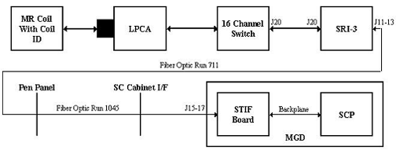

Proprietary to General Electric Company
Direction 5670006, Rev# 1
Discovery MR750w GEM Service Methods
Module Version 1.0, Version Date 4/26/07
Proprietary to General Electric Company |
Diagnostics >> Peripherals >> SRI Functional Tests
This tests the communication chain for retrieving and displaying the Coil IDs and serial numbers.
Illustration 1: SRI Coil ID - 16-channel Switch Block Diagram

The SCP commands the SRI-3 to check for any coil connected. The SRI-3 reads the coil presence information from J20 at the 16-channel Switch via the data cable to J20 on the SRI-3. If a coil is detected, the SRI-3 sends commands to communicate with the coil over the same data cable to the 16 Channel Switch.
If the coil is connected and is programmed with identification information, the Coil ID is read and displayed on the diagnostic screen. The user may run this test on any coil plugged in to the system that has coil ID.
Select test.
Enter number of iterations.
Click [Run].
Troubleshooting:
To verify that the red and green coil ID LEDs are working, execute the Magnet Enclosure Display Test and watch the LEDs activate while running this test. The red LED alone will be lit only if there is a communication problem to the coil ID chip or the coil ID chip is not present.
When a coil is connected, the red and green coil ID LEDs for that connector should turn on immediately. The SRI will then read the coil ID from the coil. If the coil ID chip is readable and present, the red LED will turn off very quickly and the green LED will stay lit.
The red LED will be lit alone only if there is a communication problem to the coil ID chip or the coil ID chip is not present.